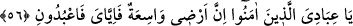
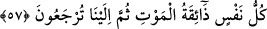

56. Ey îman eden kullarım! Şüphesiz, benim arzım geniştir. O halde (nerede
güven içinde olacaksanız orada) yalnız bana kulluk edin.
“Ey îman eden kullarım!” âyeti, küfür tarafındaki bir engelden dolayı dînî
sorumluluklarını gereği gibi yerine getirme imkanı bulamayan bazı mü’minler için
şerefli bir hitaptır.
Kâşîfî der ki: Rivayet edildiğine göre müminlerden bir topluluk yiyeceklerinin azlığı
ve hicrete güçleri yetmediğinden veya vatanlarına olan muhabbet ve kardeşlerinin
sohbetinden mahrum kalmamak için hicret etmiyorlardı. Korku ve havf sebebiyle
Allah’a ibâdet ettiler.
Belki de Allah Teâlâ, bazı sahabilerin din uğrunda işkenceye maruz kalmaları
sebebiyle bu âyeti inzâl buyurmuştur. Yâni “Ey mü’min kullarım! Herhangi bir beldede
ibâdet sorumluluğunuzu ve dini yükümlülüklerinizi yerine getirmeniz ve dininizi açıkça
yaşamanız mümkün değilse, bunları ikâme edebileceğiniz başka bir yere hicret edin.”
demektir. “Şüphesiz benim arzım” yarattığım diyarlar ve memleketler “geniştir.” Size
dar gelmesin.
“Arz”, Gök’ün zıddı olarak kullanılır; kütle ve cismi olan yerküreye denir.
Şayed bir yerde hâlis olarak bana ibâdet etme imkânınız kalmazsa; “O halde (nerede
güven içinde olacaksanız orada) yalnız bana kulluk edin.”
“__WORD__ kelimesinin başındaki “fâ” harfi, hazfedilen şartın başına gelmiş, sonra şart
hazfedilince onun yerine ihtisas ve ihlâs mânâsını ifâde etmek üzere mef’ul öne
geçmiştir.
Kâşîfî der ki:
Eğer âileniz ve çocuklarınıza olan sevginizden ve memleketinize olan bağlılığınızdan
dolayı hicret etmiyorsanız, bir gün ayrılık zorunlu olacaktır. Çünkü; “Her can ölümü
tadacaktır” buyrulmuştur.
57. Her can ölümü tadacaktır. Sonunda bize döndürüleceksiniz.
“Her can ölümü tadacaktır.” Yani, her nefis ölümü tadacak, insan olsun, başka
canlılar olsun hepsi ölecek ve her biri ölüm acısını duyacaktır. Bir şeyi tadan kimsenin
durumu gibi, ölüm acısını can boğazdan çıkarken yudumlayacaktır.
Bu mânâ, “__WORD__ (tadmak)” fiilinin az ve çok şey için kullanılmasının sahih olmasına
binaendir. Nitekim Râğıb Isfahânî de bu görüştedir.